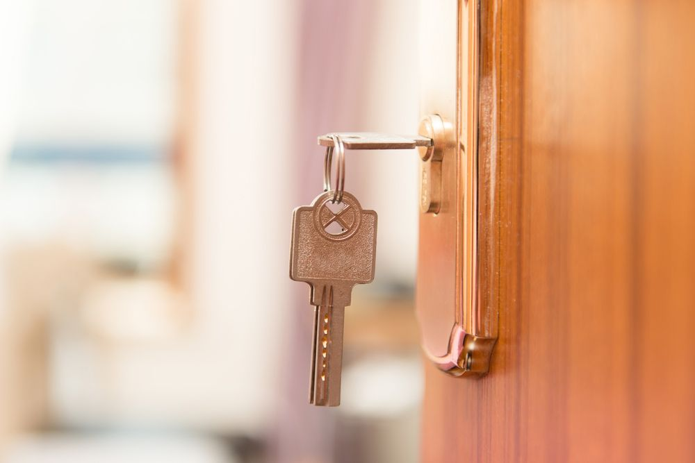
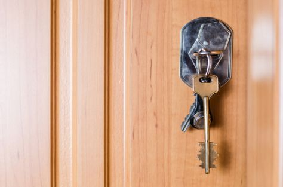
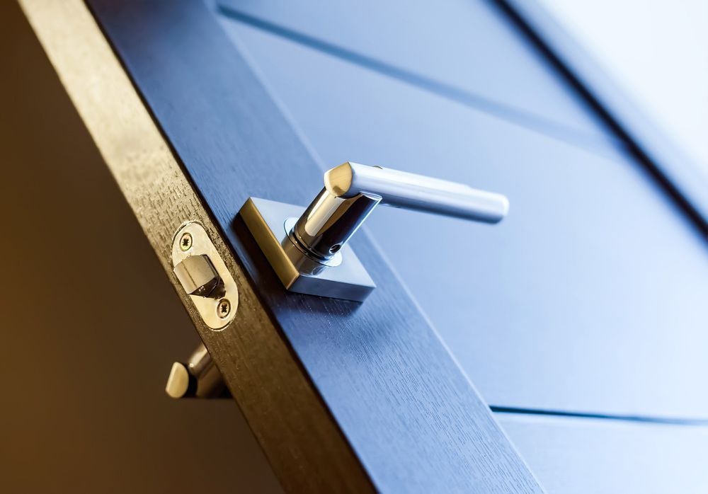

On this page
AT A GLANCE
At SPL Security Solutions, we recognise the unique security requirements of our Bundall community.
Get A Free Quote Now!

Tailored Security & Access Solutions
At SPL Security Solutions, we recognise the unique security requirements of our Bundall community. With this in mind, our comprehensive suite of locksmith services are designed to provide residents, businesses and vehicle owners with the specific solutions they need.
Homeowners can enjoy a wide array of services—from advanced security lock installations to emergency lockout response. For businesses, we offer custom security audits that pinpoint specific vulnerabilities, coupled with tailored solutions such as restricted key cutting, monitoring and access control systems. Furthermore, our automotive locksmith services include key replacement, lock repairs and emergency vehicle access. Our dedicated team is always on standby ready to assist.
For more information on our comprehensive range of locksmith services, call (07) 5588 8111.
Our residential locksmith services in Bundall are a testament to our dedication to home security. From installing robust locks to carrying out essential repairs and rekeying, we offer a comprehensive range of lock and key solutions. What's more, our emergency lockout services are there for when you're in a tight spot and need assistance fast.
In Bundall, our commercial locksmith services offer comprehensive and customised security solutions for all types of businesses. We provide high-quality lock installations, master key systems and access control solutions to manage who has access to your property. Our team also offers emergency assistance and can conduct security assessments to identify vulnerabilities in your existing system.
If you find yourself locked out of your car in Bundall, our automotive locksmith services can help. Our team offers key replacement, duplication and transponder programming services to get you back on the road quickly. We also provide ignition repair or replacement for malfunctioning keys. With our 24/7 emergency assistance, you'll never have to worry about being stranded without help.
Our restricted key systems use proprietary designs to prevent the unauthorised replication of keys. This feature ensures access to sensitive areas is restricted to authorised personnel only, greatly reducing the risk of security breaches. We collaborate closely with our Bundall clients to provide solutions that align perfectly with their security requirements, offering them an unmatched level of control and security.
We provide Bundall clients with access to a comprehensive range of safes, specially selected for their durability and security features. Our options cater to various security needs—from fire resistance to reinforced walls and hard to crack locking mechanisms. Additional services include professional installation, maintenance and emergency unlocking assistance if needed.
From CCTV cameras to access control systems, we offer a range of security solutions in Bundall to protect your property and valuables. Our team can help you design the ideal system for your specific security needs and budget, incorporating advanced technology like alarm systems and intercoms for added protection. We can also provide professional installation and ongoing maintenance.
Protect your Bundall property with durable lock hardware such as deadbolts, mortice locks and high-quality padlocks. These options are designed to provide exceptional security for residential and commercial needs.
Our door hardware in Bundall includes robust hinges, ergonomic handles and reliable door closers. These products are ideal for upgrading entryways with durable yet stylish and secure solutions.
Our selection features fire-resistant door hardware, efficient door closers, and stylish handles, ensuring an ideal balance of functionality and design appeal in Bundall.
24/7 Emergency Locksmith Services
Locked out? Our team at SPL Security Solutions is here to help you regain access. We provide 24/7 emergency locksmith services for lockouts, faulty locks and other urgent situations. Rest assured, our team has the necessary expertise and technology to get your day back on track quickly and efficiently.
After a break-in, our team can assess your property for any damage to entry points and provide the necessary repairs or replacements to re-secure them. Our mobile vans come equipped with the latest tools which allows us to provide on the spot lock replacements, rekeying and more.

Contact Details
24/7 Emergency Locksmiths or Security Tech
Trading Hours
Retail Shop

Frequently Asked Questions
-
What are restricted keys?
Restricted keys are designed to prevent unauthorised duplication, offering a higher level of security. These keys can only be copied with appropriate authorisation and usually involve a more intricate design that requires specialised equipment to duplicate.
-
How do I protect my home from lock snapping?
To protect against lock snapping, install high-security euro cylinder locks that meet the TS007 3-star standard or the Sold Secure Diamond standard. These locks are designed to resist snapping attacks.
Locksmith & Security Solutions Gold Coast, Brisbane & Northern NSW